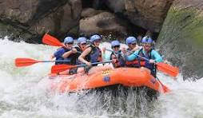

Level 1 Family Raft

Level 2 Intermedium Water Rafting

Level 3 Wild Rafting
Level 1 Family Raft
Level 2 Intermedium Water Rafting
Level 3 Wild Rafting
The most exciting rivers of Utah, Wyoming and Colorado are here, our company with more than 20 years of experience provides quality equipment, plus our guides are highly trained, which guarantees a unique experience on each level.
| Trip | Level rafting | cost | Description |
|---|---|---|---|
| Green River | Level 1 | $100 | Family Raft |
| Green River | Level 2 | $150 | Intermedium Water Rafting |
| Green River | Level 3 | $200 | Class IV Rapids |